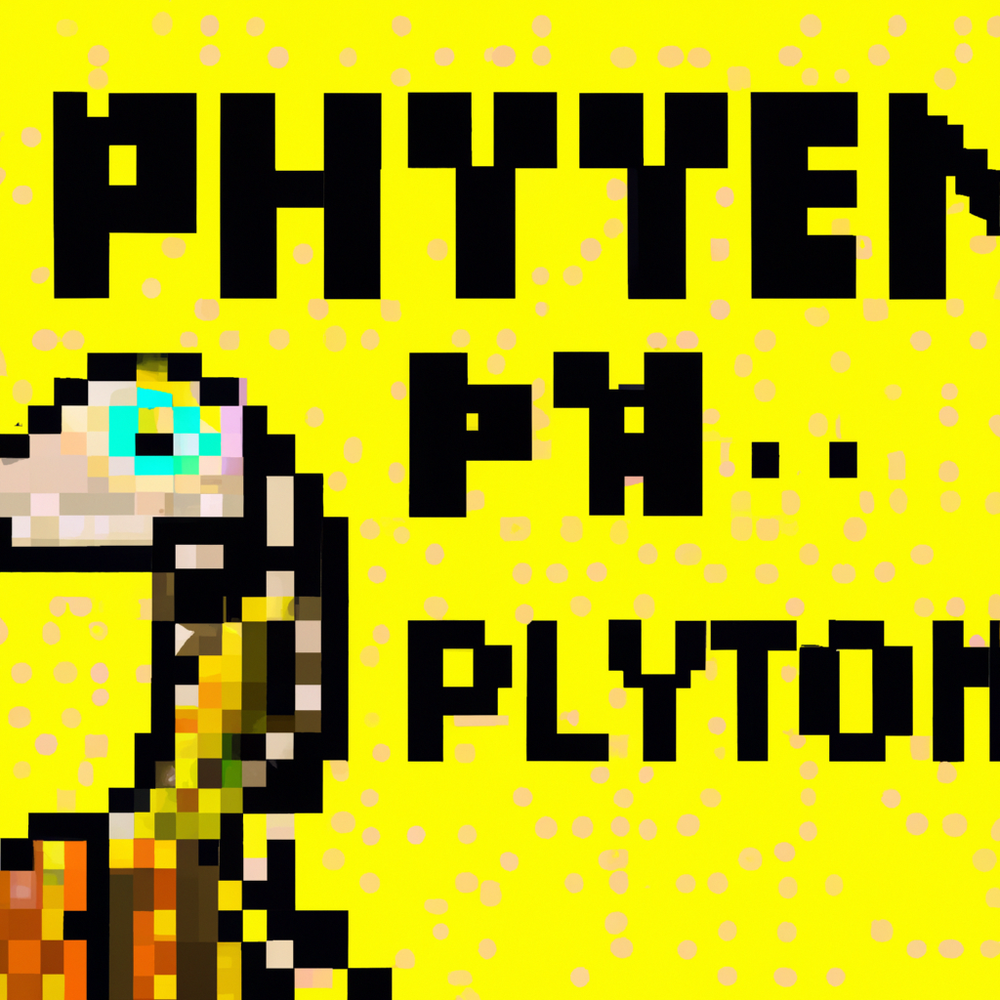

The future of Python and AI
Python is an incredibly powerful and versatile programming language that is quickly becoming the language of choice for Artificial Intelligence, Machine Learning, and Data Science. With its easy-to-learn syntax and expansive libraries, Python is a great language for beginners and professionals alike. The future of AI holds incredible potential, and Python is at the forefront of this development.
Python is already being used to create complex AI models and algorithms that can accurately predict outcomes and make decisions. It can be used to automate processes, such as data mining and analysis, and to develop intelligent applications that can interact with users in natural language. Its robust libraries and frameworks make it easy to develop, test, and deploy AI-driven applications quickly and efficiently.
In the future, Python is expected to be used even more extensively in the development of AI-driven applications. With advances in machine learning, deep learning, and natural language processing, Python will become even more powerful and be used to develop more sophisticated applications. Additionally, Python is being used to develop distributed AI applications, such as distributed neural networks, which can be used to solve complex problems.
The future of Python and AI looks bright, and it’s exciting to think about what new and innovative applications will be created in the years to come. As more and more organizations embrace AI and Python, the possibilities are endless. With the right resources and expertise, Python can be a powerful tool in the development of AI-driven applications.